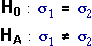

Hypotheses
We assume that the data consist of independent random samples of size n1 and n2 from two normal populations,
| Group 1: | Y ~ normal (µ1 , σ1) |
| Group 2: | Y ~ normal (µ2 , σ2) |
We will not consider whether the two means, µ1 and µ2, are the same at present. (A t-test for this hypothesis was described earlier.) Instead, we only examine whether the standard deviations (or equivalently variances) are equal,

Test statistic
The test statistic for assessing these hypotheses is based on the sample standard deviations in the two groups, s1 and s2.

F distribution
Provided the data are sampled from normal populations, the F ratio has a standard distribution called an F distribution. The shape of this distribution depends on the sample sizes of the two groups — the F distribution has two parameters called its 'degrees of freedom' that are one less than the sample sizes in the groups. In its most general form, the F distribution is scaled by the two population variances,
However if the two groups really have the same population standard deviations (the null hypothesis for the test), then this simplifies and the distribution does not involve any unknown parameters:

Shape of the F distribution
The diagram below shows the shape of the F distribution.
Use the sliders to adjust the degrees of freedom for the distribution (one fewer than the sample sizes in the two groups for the F variance-ratio statistic). Observe that:
In practice, we usually only want to compare variances when both sample sizes are reasonably high.
Simulation
The following diagram shows samples of size n1 = 7 and n2 = 20 from normal populations that both have the same standard deviation (σ1 = σ2 = 1.3).
Click Accumulate then take several samples from the two groups. Observe that the variability of the F ratio matches the theoretical F distribution with 19 and 6 degrees of freedom.